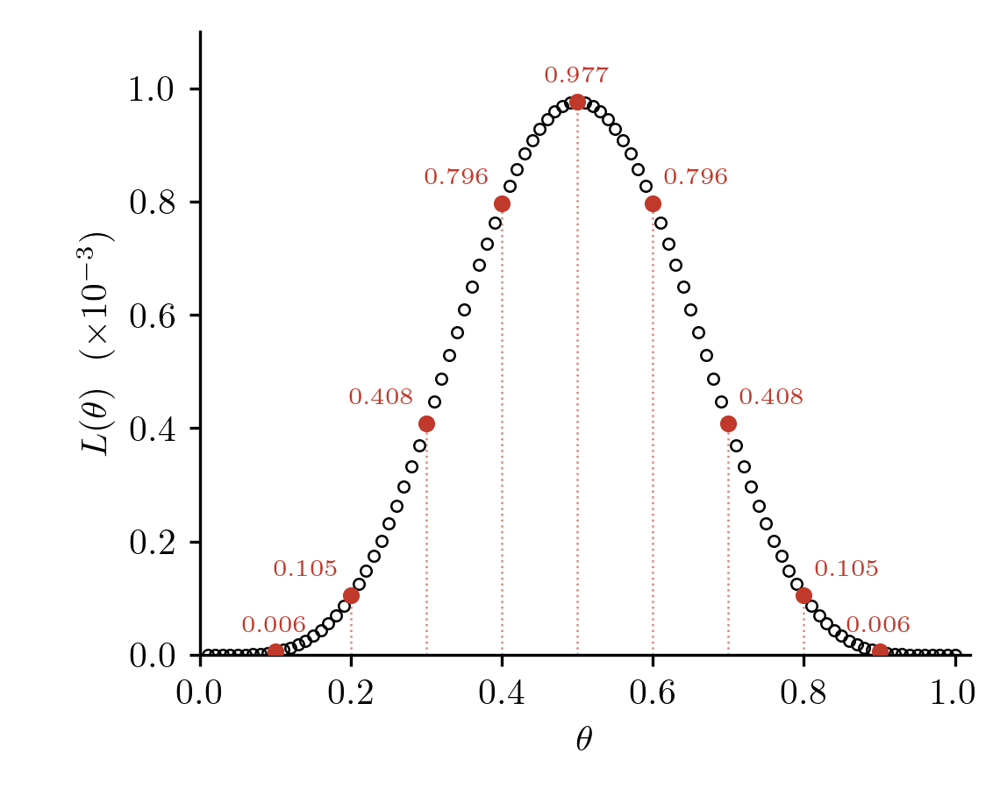
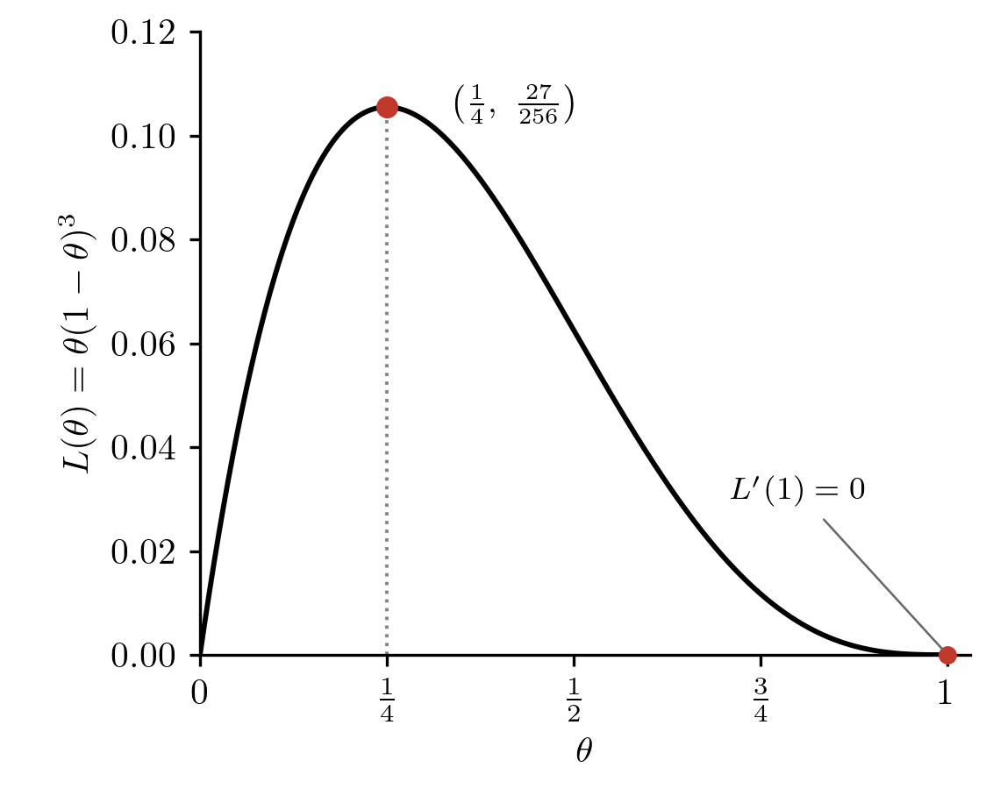
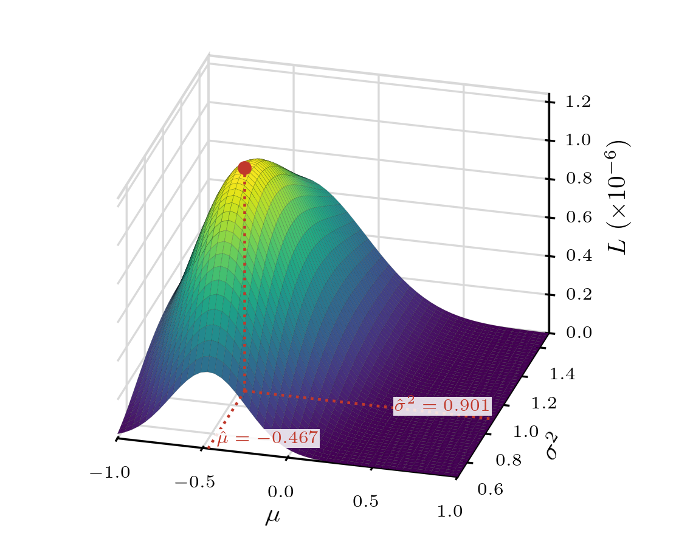

04wk-2: 최대가능도추정 (1)
1. 강의영상
2. 최대가능도 추정법
# 예제1
앞면이 나올 확률이 \(\theta\)인 동전을 10번 던져서 아래와 같이 나왔다고 하자.
- \(data\): 0, 1, 0, 0, 1, 1, 1, 0, 1, 0
이때 가능도함수는 아래와 같이 정의된다.
\[L(\theta|data) = \mathbb{P}(data|\theta)\]
- 만약에 \(\theta=0.1\) 이었다면 가능도는 \(L(\theta|data) = 0.9^5 \times 0.1^5\) 이다.
- 만약에 \(\theta=\star\) 이었다면 가능도는 \(L(\theta|data) = (1-\star)^5 \times \star^5\)와 같이 계산될 것이다.
따라서 위와 같이 \(data\)가 주어졌다면 가능도함수 \(L(\theta)=L(\theta|data)\)는 아래와 같이 일반화할 수 있다.
\[L(\theta) = (1-\theta)^5 \theta^5\]
몇 개의 점에서 가능도함수값을 계산하면 아래와 같다.
| \(\theta\) | 0.1 | 0.2 | 0.3 | 0.4 | 0.5 | 0.6 | 0.7 | 0.8 | 0.9 |
|---|---|---|---|---|---|---|---|---|---|
| \(L(\theta)\ (\times 10^{-3})\) | 0.006 | 0.105 | 0.408 | 0.796 | 0.977 | 0.796 | 0.408 | 0.105 | 0.006 |
이전 판의 표에는 \(L(\theta)\) 값이 잘못 적혀 있어 수정했습니다.
- (\(\theta=0.1\) vs \(\theta=0.2\)): 어떠한 사람의 주장이 더 그럴듯하게 들리는가?
- (\(\theta=0.2\) vs \(\theta=0.5\)): 어떠한 사람의 주장이 더 그럴듯하게 들리는가?
- \(\theta=0.5\) 라고 주장하는 사람보다 더 그럴듯한 주장을 하는 사람이 있을까?
(마지막 질문에 답하는 방법1) – 시뮬레이션으로 감잡기
처음 두 질문을 통해서 \(L(\theta)\)값을 크게 만드는 \(\theta\)가 가장 그럴듯하게 들린다는 것은 눈치챘다. 마지막 질문에 답하기 위해서는 \(\theta=0.5\)보다 \(L(\theta)\)를 크게 할 수는 없음을 보이면 된다. (즉 \(L(\theta)\)는 \(\theta=0.5\)에서 최대화됨을 보이면 된다) 더 많은 가능도함수 값을 조사하여 그림을 그려보자.
theta = 1:100/100
likelihood = (1-theta)^5 * theta^5
plot(theta,likelihood)
그림으로 보니 \(L(\theta)\)는 대략 \(\theta=0.5\)쯤에서 최대값을 가지는 듯 보인다.
(마지막 질문에 답하는 방법2) – 컴퓨터 없이 손으로만 풀이
\(L(\theta)=(1-\theta)^5\theta^5\)를 최대화하는 \(\theta\)는 0.5이다. (왜?)
5명은 \(\theta=0\) 이었음 하고.. 5명은 \(\theta=1\) 이었음 하니까 \(\theta\)는 \(0.5\)로 추정해야함.
(결론)
동전을 던져서 결과가 아래와 같이 나왔다면
- \(data\): 0, 1, 0, 0, 1, 1, 1, 0, 1, 0
일 때
- 주어진 \(data\)를 가장 잘 생성할 법한 \(\theta\)는 (대략) 0.5이다.
- 주어진 \(data\)는 \(\theta\)가 0.5라고 상상해야 가장 그럴듯하게 설명된다.
따라서 이 예제에서 동전을 던져서 앞면이 나올 확률 \(\theta\)는 0.5 라고 추정하는 게 합리적이다. 즉 이 문제의 경우 \(\theta\)에 대한 추정치는 \(\hat{\theta}=0.5\)라고 볼 수 있다.
#
# 기호약속 – 모수에 대한 추정치는 모수 그 자체 (흔히 \(\theta\)로 표기하는)와 구분 짓기 위해서 \(\hat{\theta}\) 같은 기호를 사용한다.
# note – \(\hat{\theta}\)는 추정량으로 쓰이기도 하고, 추정치로 쓰이기도 한다.
# 최대가능도 추정 – \(\underset{\theta}{\text{argmax}} ~L(\theta)\)로 \(\theta\)를 추정하는 방식을 MLE라고 한다.
3. 베르누이
# 예제2
앞면이 나올 확률이 \(\theta\)인 동전을 7번 던져서 아래와 같이 나왔다고 하자.
- \(data\): 0, 1, 0, 0, 1, 1, 1
가능도함수 \(L(\theta)=\theta^4 (1-\theta)^3\)를 최대화하는 \(\theta\)를 이론적으로 계산하라.
(풀이)
\(L(\theta)=\theta^4 \times (1-\theta)^3\)에서 편의상
- \(A = \theta^4\)
- \(B = (1-\theta)^3\)
이라고 놓자. \(L(\theta)\)를 최대화하기 위해서 \(A\)입장에서는 \(\theta=1\)이었으면 좋겠는데 \(B\)입장에서는 \(\theta=0\)이었으면 좋겠다. 의견이 일치하지 않아서 투표를 하고 싶은데 \(A\)는 비유적으로 말하면 네 명의 의견이 반영된 것이고 \(B\)는 세 명의 의견이 반영된 것이라 해석할 수 있다. 따라서 아래와 같이 해석해야 적당하다.
\[\frac{4}{7} \times 1 + \frac{3}{7} \times 0 = \frac{4}{7}\]
#
# 예제3
앞면이 나올 확률이 \(\theta\)인 동전을 4번 던져서 아래와 같이 나왔다고 하자.
- \(data\): 0, 1, 0, 0
가능도함수 \(L(\theta)=\theta (1-\theta)^3\)를 최대화하는 \(\theta\)를 이론적으로 계산하라.
(풀이)
하나의 데이터는 \(\theta=1\)이 합리적이라 생각하지만 세 개의 데이터는 \(\theta=0\)이 합리적이라 생각한다. 따라서 \(\hat{\theta}=\frac{1}{4}\)이 되어야겠다.
(풀이2) – 미분을 좋아하면 미분을 써도 된다.
- \(L(\theta)=\theta (1-\theta)^3= \theta - 3\theta^2 + 3\theta^3 - \theta^4\)
- \(L'(\theta)=1-6\theta+9\theta^2-4\theta^3\)
\(L'(\theta)=0\)을 풀면, \(L'(\theta)=-(4\theta^3-9\theta^2+6\theta-1)=-(\theta-1)^2(4\theta-1)\). 따라서 \(L'(\theta)=0\)의 해는 \(\theta=\frac{1}{4}, 1\)이다. 개형을 그려보면 \(\theta=\frac{1}{4}\)에서 함수가 최대화된다.

(풀이3) – 통계학과에서는 보통 풀이2보다는 로그+미분을 쓴다.
- \(\log L(\theta)=l(\theta) = \log\theta + 3\log(1-\theta)\)
- \(l'(\theta)=\frac{1}{\theta}-\frac{3}{1-\theta}\)
- \(l''(\theta) = -\frac{1}{\theta^2} - \frac{3}{(1-\theta)^2} < 0\)
그래프의 개형 따질 필요 없이 \(l''(\theta)<0\)이면 concave 함수이고 따라서 \(l'(\theta)=0\)을 만드는 값이 최대값이다. 이제 \(l'(\theta)=0\)을 풀어보자. 풀어보면 \(\theta=\frac{1}{4}\)을 얻는다.
#
- 요약: \(X_1,\dots,X_{n} \overset{iid}{\sim} Ber(\theta)\) 이라면
- 가능도함수는 항상 \(L(\theta)=(1-\theta)^{(0\text{이 나온 횟수})} \times \theta^{(1\text{이 나온 횟수})}=(1-\theta)^{n-\sum x_i} \times \theta^{\sum x_i}\) 이런 모양을 가지고,
- 가능도함수는 \(\theta=\bar{x}\)에서 최대값을 가진다.
따라서 \(X_1,\dots,X_{n} \overset{iid}{\sim} Ber(\theta)\) 에서 \(\theta\)를 최대가능도 기법으로 추정하기 위해서는 \(\bar{x}\)를 쓰면 된다.
4. 정규분포
# 예제4
정규분포에서 아래와 같은 데이터를 관측하였다고 하자.
- \(data\): -1.4805676, 1.5771695, -0.9567445, -0.9200052, -1.9976421, -0.2722960, -0.3153487, -0.6282552, -0.1064639, 0.4280148
정규분포의 평균과 분산을 최대가능도방법으로 추정하라.
(풀이)
정규분포의 pdf는 아래와 같다.
\[f(x) = \frac{1}{\sigma\sqrt{2\pi}} e^{-\frac{(x-\mu)^2}{2\sigma^2}}\]
가능도함수는 아래와 같이 정의된다. \[L(\theta|data) = f(data|\theta)\]
여기에서 \(\theta = (\mu,\sigma^2)\) 이므로 가능도함수는 아래와 같이 된다.
\[L(\mu,\sigma^2|data) = f(data|\mu,\sigma^2)\]
\(data\)가 아래와 같을 때
- \(data\): -1.4805676, 1.5771695, -0.9567445, -0.9200052, -1.9976421, -0.2722960, -0.3153487, -0.6282552, -0.1064639, 0.4280148
가능도함수를 정리하면 아래와 같다.
\[L(\mu,\sigma^2)=\frac{1}{\sigma\sqrt{2\pi}} e^{-\frac{(-1.4805676-\mu)^2}{2\sigma^2}}\times\dots\times\frac{1}{\sigma\sqrt{2\pi}} e^{-\frac{(0.4280148-\mu)^2}{2\sigma^2}}\]
데이터가 서로 독립이므로 전체의 확률밀도는 각 데이터의 확률밀도의 곱이다. \[L(\mu,\sigma^2)=f(data|\mu,\sigma^2)=f(x_1|\mu,\sigma^2)\times f(x_2|\mu,\sigma^2)\times\dots\times f(x_{10}|\mu,\sigma^2)\] 여기에 \(x_1=-1.4805676,\ \dots,\ x_{10}=0.4280148\) 과 \(f(x|\mu,\sigma^2)=\frac{1}{\sigma\sqrt{2\pi}} e^{-\frac{(x-\mu)^2}{2\sigma^2}}\) 을 넣으면 위의 식이 된다.
이제 \(L(\mu,\sigma^2)\)을 최대화하는 \(\mu,\sigma^2\)의 값이 무엇인지 알아보자.
(시뮬레이션으로 감잡기)
몇 개의 \(\mu\)와 몇 개의 \(\sigma^2\) 에 대한 가능도값을 구하면 아래와 같다.
| \(\sigma^2=0.8\) | \(\sigma^2=0.9\) | \(\sigma^2=1.0\) | \(\sigma^2=1.1\) | \(\sigma^2=1.2\) | |
|---|---|---|---|---|---|
| \(\mu=-0.7\) | 8.0e-07 | 8.6e-07 | 8.6e-07 | 8.2e-07 | 7.7e-07 |
| \(\mu=-0.6\) | 1.0e-06 | 1.0e-06 | 1.0e-06 | 9.7e-07 | 8.9e-07 |
| \(\mu=-0.5\) | 1.1e-06 | 1.2e-06 | 1.1e-06 | 1.0e-06 | 9.6e-07 |
| \(\mu=-0.4\) | 1.1e-06 | 1.1e-06 | 1.1e-06 | 1.0e-06 | 9.4e-07 |
| \(\mu=-0.3\) | 9.4e-07 | 9.9e-07 | 9.8e-07 | 9.3e-07 | 8.5e-07 |
| \(\mu=-0.2\) | 7.1e-07 | 7.8e-07 | 7.9e-07 | 7.6e-07 | 7.1e-07 |
| \(\mu=-0.1\) | 4.8e-07 | 5.5e-07 | 5.7e-07 | 5.7e-07 | 5.5e-07 |
| \(\mu=0.0\) | 2.9e-07 | 3.4e-07 | 3.8e-07 | 3.9e-07 | 3.9e-07 |
| \(\mu=0.1\) | 1.5e-07 | 1.9e-07 | 2.3e-07 | 2.4e-07 | 2.5e-07 |
대략적으로 \(\sigma^2=0.9\) \(\mu=-0.5\) 근처에서 최대값을 가지는 듯하다. 이를 그림으로 그려보자.

역시 표로 얻은 직관과 비슷하다. 따라서 \(\mu\)와 \(\sigma^2\)을 대략적으로 \(-0.5\), \(0.9\)로 추정하는 것이 바람직해 보인다. 이는 우리의 직관과 대략적으로 일치한다.
x = data = c(-1.4805676, 1.5771695, -0.9567445, -0.9200052, -1.9976421,
-0.2722960, -0.3153487, -0.6282552, -0.1064639, 0.4280148)
mean(x)[1] -0.4672139sd(x) # 이게 약간 달라보이는 것은 기분탓일까?? 0.95쯤(=sqrt(0.9)) 나올 것 같았는데 아니네??[1] 1.000657(컴퓨터없이 손으로만 하는 풀이로 마무리)
우리가 최대화하고자 하는 함수는 아래와 같다.
\[L(\mu,\sigma^2)=\frac{1}{\sigma\sqrt{2\pi}} e^{-\frac{(-1.4805676-\mu)^2}{2\sigma^2}}\times\dots\times\frac{1}{\sigma\sqrt{2\pi}} e^{-\frac{(0.4280148-\mu)^2}{2\sigma^2}}\]
위 식의 양변에 \((\sqrt{\pi})^{10}\)을 곱하면 아래와 같이 된다.
\[(\sqrt{\pi})^{10}\times L(\mu,\sigma^2)=\frac{1}{\sigma\sqrt{2}} e^{-\frac{(-1.4805676-\mu)^2}{2\sigma^2}}\times\dots\times\frac{1}{\sigma\sqrt{2}} e^{-\frac{(0.4280148-\mu)^2}{2\sigma^2}}\]
데이터 1개당 “\((\sqrt{\pi})^{10} \times 가능도\)”를 정리하면 아래와 같이 된다.
\[\frac{1}{\sqrt{2}\sigma} \times e^{-\frac{(x_i-\mu)^2}{2\sigma^2}}\]
* \(\mu\)가 …였음 좋겠다.*
\(\sigma^2\)가 정해진 상수라고 생각하면 “\((\sqrt{\pi})^{10} \times 가능도\)”는 \(x_i=\mu\)에서 최대화된다.
* \(\sigma^2\)가 …였음 좋겠다. *
이번에는 \(\mu\)가 정해진 상수라고 생각하자. “\((\sqrt{\pi})^{10} \times 가능도\)”를 정리하면 \(\exp\left(\log \frac{1}{\sqrt{2}\sigma} - \frac{(x_i-\mu)^2}{2\sigma^2}\right)\)와 같이 된다. 그런데 \(\exp\left(\log \frac{1}{\sqrt{2}\sigma} - \frac{(x_i-\mu)^2}{2\sigma^2}\right)\)은 \(\log \frac{1}{\sqrt{2}\sigma} - \frac{(x_i-\mu)^2}{2\sigma^2}\)의 값이 클수록 최대화된다. (수학천재가 와서) 수식을 살짝 바꿔주면
\[\log \frac{1}{\sqrt{2}\sigma} - \frac{(x_i-\mu)^2}{2\sigma^2}=-\frac{1}{2}\log2 -\frac{1}{2}\log \sigma^2-\frac{1}{2}\frac{(x_i-\mu)^2}{\sigma^2}\]
이 된다. 따라서 결국에는 아래를 최소화하는 \(\sigma^2\)를 찾아 주면 된다.
\[\log \sigma^2 + \frac{(x_i-\mu)^2}{\sigma^2}\]
\(\frac{\sigma^2}{(x_i-\mu)^2}=t\) 로 치환하면 위 식은 \[\log (x_i-\mu)^2 + \left(\log t + \frac{1}{t}\right)\] 가 된다. 그런데 \(\log t + \frac{1}{t} \geq 1\) 이므로 (왜냐하면 부등식 \(\log x \leq x-1\) 이 성립하니까) 주어진 식은 \(t=1\) 일 때 최소화된다. 따라서 \(i\)번째 데이터는 \(\sigma^2=(x_i-\mu)^2\) 이었으면 좋겠다고 주장한다.
부등식 \(\log x \leq x-1\) (\(x>0\), 등호는 \(x=1\)일 때만 성립)의 \(x\) 자리에 \(\frac{1}{t}\)을 넣으면 \[\log \frac{1}{t} \leq \frac{1}{t}-1 \quad\Longleftrightarrow\quad -\log t \leq \frac{1}{t}-1 \quad\Longleftrightarrow\quad \log t+\frac{1}{t} \geq 1\] 이고, 등호는 \(\frac{1}{t}=1\) 즉 \(t=1\)일 때만 성립한다. 따라서 \(\log t+\frac{1}{t}\)는 \(t=1\)에서 가장 작다.
부등식 \(\log x \leq x-1\) 자체는 그림으로 이해하면 된다. \(y=\log x\)는 \(x=1\)에서 직선 \(y=x-1\)에 접하고, 위로 볼록한 곡선이라 항상 그 접선 아래에 있다. (여기서 \(\log\)는 자연로그이다.)
여기를 참고하면 좋아요: https://www.desmos.com/calculator?lang=ko
* 투표
각각의 \(x_i\)는 모두 아래와 같이 생각한다.
- (\(\sigma^2\)이 정해진 값이라면) \(\hat\mu=x_i\) 로 추정하고 싶음.
- (\(\mu\)가 정해진 값이라면) \(\hat{\sigma}^2=(x_i-\mu)^2\) 로 추정하고 싶음.
이게 무슨 의미인가? 앞의 가능도 표를 다시 보자.
| \(\sigma^2=0.8\) | \(\sigma^2=0.9\) | \(\sigma^2=1.0\) | \(\sigma^2=1.1\) | \(\sigma^2=1.2\) | |
|---|---|---|---|---|---|
| \(\mu=-0.7\) | 7.95e-07 | 8.57e-07 | \(\color{blue}{\text{8.60e-07}}\) | 8.24e-07 | 7.66e-07 |
| \(\mu=-0.6\) | 9.99e-07 | \(\color{blue}{\text{1.05e-06}}\) | 1.03e-06 | 9.74e-07 | 8.92e-07 |
| \(\mu=-0.5\) | \(\color{red}{\text{1.11e-06}}\) | \(\color{purple}{\text{1.15e-06}}\) | \(\color{red}{\text{1.12e-06}}\) | \(\color{red}{\text{1.05e-06}}\) | \(\color{red}{\text{9.56e-07}}\) |
| \(\mu=-0.4\) | 1.08e-06 | \(\color{blue}{\text{1.13e-06}}\) | 1.10e-06 | 1.03e-06 | 9.42e-07 |
| \(\mu=-0.3\) | 9.37e-07 | \(\color{blue}{\text{9.91e-07}}\) | 9.81e-07 | 9.29e-07 | 8.55e-07 |
| \(\mu=-0.2\) | 7.14e-07 | 7.79e-07 | \(\color{blue}{\text{7.89e-07}}\) | 7.62e-07 | 7.13e-07 |
| \(\mu=-0.1\) | 4.80e-07 | 5.47e-07 | \(\color{blue}{\text{5.75e-07}}\) | 5.71e-07 | 5.48e-07 |
| \(\mu=0.0\) | 2.85e-07 | 3.44e-07 | 3.79e-07 | \(\color{blue}{\text{3.91e-07}}\) | 3.87e-07 |
| \(\mu=0.1\) | 1.49e-07 | 1.94e-07 | 2.26e-07 | 2.44e-07 | \(\color{blue}{\text{2.51e-07}}\) |
- \(\color{red}{\text{빨간 글씨}}\) (각 열에서 가장 큰 값): \(\sigma^2\)이 얼마이든 항상 \(\mu=-0.5\) 에서 최대이다. \(\mu\)에 대한 의견은 \(\sigma^2\)과 상관이 없다.
- \(\color{blue}{\text{파란 글씨}}\) (각 행에서 가장 큰 값): \(\mu\)에 따라 최대가 되는 \(\sigma^2\)의 위치가 \(0.9 \sim 1.2\) 로 움직인다. \(\sigma^2\)에 대한 의견은 \(\mu\)에 달려 있다.
- \(\color{purple}{\text{보라 글씨}}\): 둘이 겹치는 칸 (\(\mu=-0.5\), \(\sigma^2=0.9\)).
보라색 글씨를 찾는 것이 목표이다. 이를 위해서는 (1) 빨간 글씨들이 포함된 행을 먼저 찾고 (2) 그 다음 그 행에서 파란 글씨를 찾으면 된다. 즉 \(\mu\)를 먼저 최적화하고 그 다음 \(\sigma^2\)를 최적화하면 된다.
- 데이터들은 먼저 \(\mu\)의 추정값에 대해 투표한다. 각 데이터들은 \(\hat\mu=x_i\) 이었으면 좋겠다고 생각하므로 투표 결과는 \(\hat{\mu}=\bar{x}=-0.4672139\) 이다.
- 다음으로 데이터들은 \(\sigma^2\)에 대해 투표한다. 각 데이터들은 \(\hat{\sigma}^2=(x_i-\mu)^2\) 이면 좋겠다고 생각한다. (각 데이터들은 모수 \(\mu\)가 무엇인지는 모르겠지만 그 값에 따라서 \(\sigma^2\)를 추정하는 구체적인 값은 달라질 수 있다고 생각함) 이 문제는 언뜻 생각해서는 풀 수 없어 보인다. 왜냐하면 \(\mu\)를 모르므로 \(\sigma^2\)의 추정치를 정하는 것이 불가능하기 때문이다. 하지만 \(\sigma^2\)의 추정치는 몰라도 추정하는 방식은 알 수 있다. (구체적인 값은 모르지만 그 방식은 합의되어 있음) 어떤 식이냐면 “\(\mu\)가 \(m\)이라면 \(\hat{\sigma}^2=(x_i-m)^2\) 이었으면 좋겠다”는 꼴이다. 즉 \(\sigma^2\)에 대한 의견은 하나의 값이 아니라 \(\mu\)에 따라 달라지는 규칙이다. (표에서 파란 글씨의 위치가 행마다 다른 것이 이 뜻이다.) 그런데 1번에서 데이터 본인들이 \(\mu\)는 이미 \(\bar{x}\)로 정했으므로, 각 데이터는 \(\hat{\sigma}^2=(x_i-\bar{x})^2\) 에 투표한다. 따라서 투표 결과는 \(\hat{\sigma}^2=\frac{1}{n}\sum_{i=1}^{n}(x_i-\bar{x})^2\) 이다.
위의 논리는 사실 “\(-\log L(\mu,\sigma^2)\)를 \(\mu\)와 \(\sigma^2\)로 각각 편미분한 식을 0으로 놓고, 두 식을 연립해서 푼다”는 논리와 같은 거예요.
#
- 요약: \(X_1,\dots,X_{n} \overset{iid}{\sim} N(\mu,\sigma^2)\) 이라면
- 가능도함수는 항상 \(L(\mu,\sigma^2)=\frac{1}{\sqrt{2\pi}\sigma}e^{-\frac{(x_1-\mu)^2}{2\sigma^2}}\times\dots\times\frac{1}{\sqrt{2\pi}\sigma}e^{-\frac{(x_n-\mu)^2}{2\sigma^2}}\) 이런 모양을 가지고,
- 가능도함수는 \(\mu=\bar{x}\), \(\sigma^2=\frac{1}{n}\sum_{i=1}^{n}(x_i-\bar{x})^2\) 에서 최대값을 가진다.
\(\frac{1}{n-1}\sum_{i=1}^{n}(x_i-\bar{x})^2\) 에서 최대값을 가지는 것이 아니다. 분모가 \(n-1\)이 아니라 \(n\)이다. (시험에 낼거에요!)
따라서 \(X_1,\dots,X_{n} \overset{iid}{\sim} N(\mu,\sigma^2)\) 에서 \(\mu\)와 \(\sigma^2\)를 최대가능도 기법으로 추정하기 위해서는 \(\bar{x}\)와 \(\frac{1}{n}\sum_{i=1}^{n}(x_i-\bar{x})^2\)를 쓰면 된다.
- 위에서 sd(x)가 약간 달라보였던 것은 기분탓이 아니다. R에서 sd(x)는 \(n\)이 아니라 \(n-1\)로 나눈 값이기 때문이다.